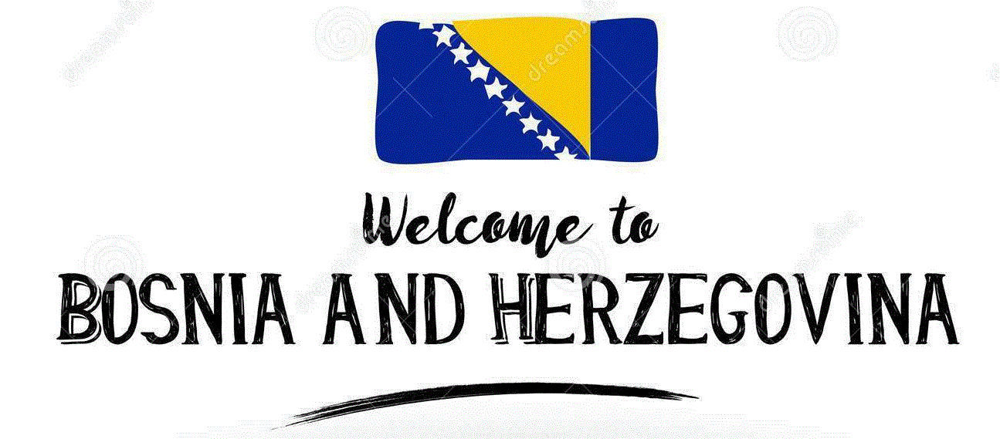

Click on the map of the places you want to see
Mostar
Mostar or as others call it "Stari Most" translates to "Old Bridge" it was rebuilt back in the 16th century and it was destroyed back in November 1993 during the war. It was rebuilt and opened on July 2003. It holds a special place in the heart for many of the Bosnian people. It features a Diving tradition at the end of every July and divers leap from the bridge into the waters below, diving 79Feet (24 meters)
Baščaršija
Baščaršija was built back in the 15th century. As of today, it stands as the most popular tourist attraction. It offers a wide variety of things to see, from important historic buildings to delicious food and cafe outings. It is a perfect place for kids during the day as the pigeons roam freely in the heart of it. During the night, it is a popular place for outings to the cafes that are in the area.
Kravica Waterfall
Kravica waterfall is for nature lovers, it offers adventures as far as the eye can see. It also has a cafe, a rope swing, picnic area for families and camping as well. The peak of the waterfall is about 80feet (25meters). It can serve for peaceful swimming and enjoyment with friends and family, or it can be an ultimate rush for the thrill seeker who wishes to conquer it.
Neum
Neum is a town that consists of just above 4,000 people. It is located right next to the ocean for all to enjoy. It is the only large mass of water that is connected to Bosnia. The coastline that belongs to Bosnia is just about 12 miles. It offers many cafes by the ocean side to enjoy from and a crystal clear beach!
Pliva Waterfall
Pliva waterfalls is located by the town of Jajce, It is in Central Bosnia and worth the trip there. It combines the river Pliva and the river Vrbas. It stood 30meters high but unfortunately due to an earthquake and the after effects of the Bosnian war the river became flooded and the waterfall now stands 22meters high. Watermills populate the area upstream along with several small waterfalls.